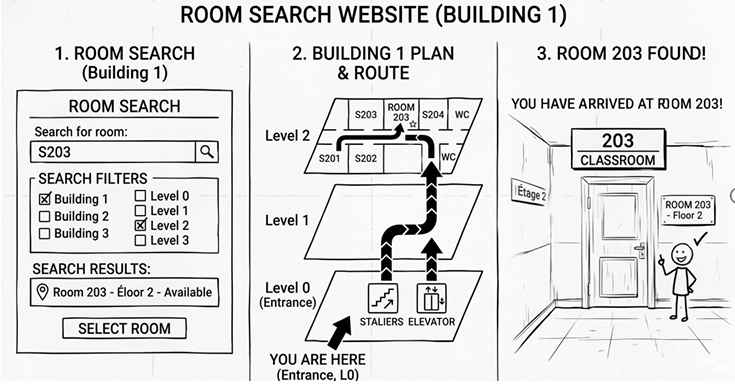
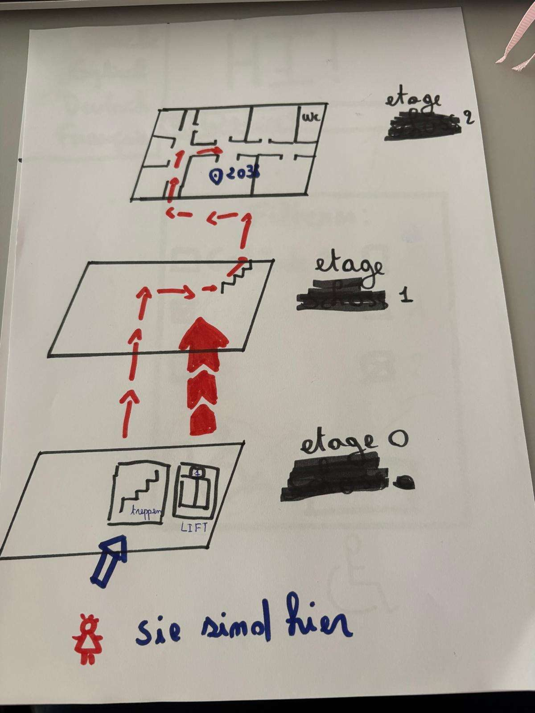

Campus Guide
A web app that guides first-year students from the entrance to their lecture room, tested with students on campus.
- Context
- Elective module User Experience Engineering, HTW Saar. L2, semester 4
- Type
- Academic team project, four students
- My part
- User research, persona, Lean UX Canvas, MVP analysis, test preparation
- Tools
- Paper prototype, HTML/CSS/JavaScript prototype (by a teammate), GitHub Pages
Overview
In the elective module User Experience Engineering, our team of four picked a problem we knew from experience: finding rooms on the Alt-Saarbrücken campus of HTW Saar. Some of us had been late to class because of it.
The report and the prototype are in German.
Problem
Students, mostly first-years, lose time and arrive late because the campus is hard to read: confusing building numbers, an unclear structure and little signage. The first weeks are the hardest, and breaks of 15 minutes leave no time for detours.
Goals
- Business goal in our Lean UX Canvas: raise punctuality by 5% by the next semester start. It is a target we set, not a measured result.
- MVP limited to Building 8 so that floor plans stay readable on a phone.
- Core features: room search, building display, route from the main entrance to the room.
My role and the team
We were four students and shared the work. The table separates what I did from what the team did.
| What | Who |
|---|---|
| Field research with 15 students, persona, Lean UX Canvas, MVP analysis | I worked on these, with the team |
| Test script (14 steps) and preparation of the usability test | I prepared it together with a teammate |
| Brainstorming, choice of concept, paper prototype, wireframes | The whole team |
| Interactive HTML/CSS/JavaScript prototype | Mainly my teammate Wahiba Sebia. I did not code it. |
User research
We observed and interviewed 15 students on campus, mostly first-years, who have the most trouble with first orientation. We interviewed without a fixed script so we could adapt questions to the place, then sorted and counted the answers.
| Problem named | Mentions |
|---|---|
| Confusing building numbering | 5 |
| Unclear building structure | 3 |
| Insufficient signage | 2 |
| No ramps at some entrances | 2 |
| Broken car park display | 2 |
| Long distance between rooms in short breaks | 1 |
We focused on the orientation problems (numbering, building structure and signage) and set aside ramps, parking and break length for a later round.
Persona
Our key persona, Emma, is a first-semester student who wants to arrive on time because some lecturers do not admit latecomers. She drives, parks, and finds her way with her phone. Her key need: know quickly which building her next room is in and how to get there, because breaks of 15 minutes leave no time for detours.
Ideation
We brainstormed in a group chat so that team members who were ill could take part. We allowed deliberately absurd ideas, such as a robot dog that walks ahead, smart glasses and drones. They raised the number of ideas and lowered inhibitions. The text chat made clustering hard, so a shared visual board would have worked better.
We combined a room finder with route search and QR codes, because it works on the phone students already have.
Wireframes
The team sketched wireframes and a paper prototype with the QR code as the starting point.


Prototype
The high-fidelity MVP: search, route with an arrow, step-by-step text. The interface is in German.
- Scan a QR code at the entrance of Building 8. The main entrance becomes the fixed starting point, with no install and no sign-up.
- Type a room number. Suggestions appear while typing and the right floor plan opens.
- Follow a bright line with an arrowhead, with text steps such as "Take the stairs up two floors".
- Switch on the accessible mode to route through the elevator instead of the stairs.
- See a success screen at the door.
The prototype is plain HTML, CSS and JavaScript with the route drawn on a canvas. There is no backend, so it loads fast on campus Wi-Fi.
Usability test
We tested the prototype with four students at the entrance of Building 8, using think-aloud and a SUS questionnaire. They started from the QR code, found a room, followed the route to another floor, and tried the accessible mode.
Three problems, three changes
| Observed | Priority | Change |
|---|---|---|
| Unclear where the route starts | High | The main entrance is a fixed, marked starting point |
| Dashed line hard to follow | High | Solid cyan line with an arrowhead at the room |
| Plan alone not enough at floor changes | Medium | Step-by-step text instructions with icons |
Try the prototype
The interactive prototype was mainly built by my teammate Wahiba Sebia and is hosted on GitHub Pages. It opens in a new tab. The interface is in German and works best on a phone or in a narrow window.
Reflection and next steps
Limiting the scope to one building let us finish a tested product. Extending it to the rest of the campus and adding indoor positioning are the next steps.
Four testers are enough to find the big problems, not enough to claim a general score. And next time I would run the brainstorm on a shared board, as we noted in the report.